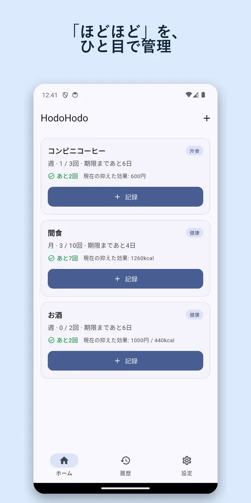
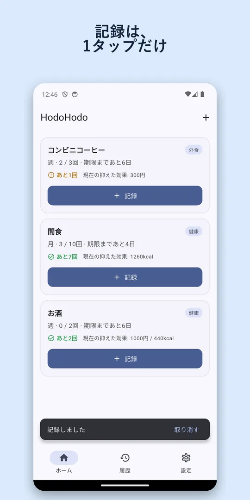
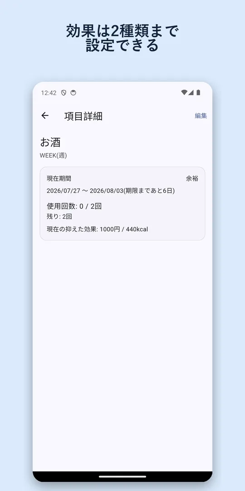
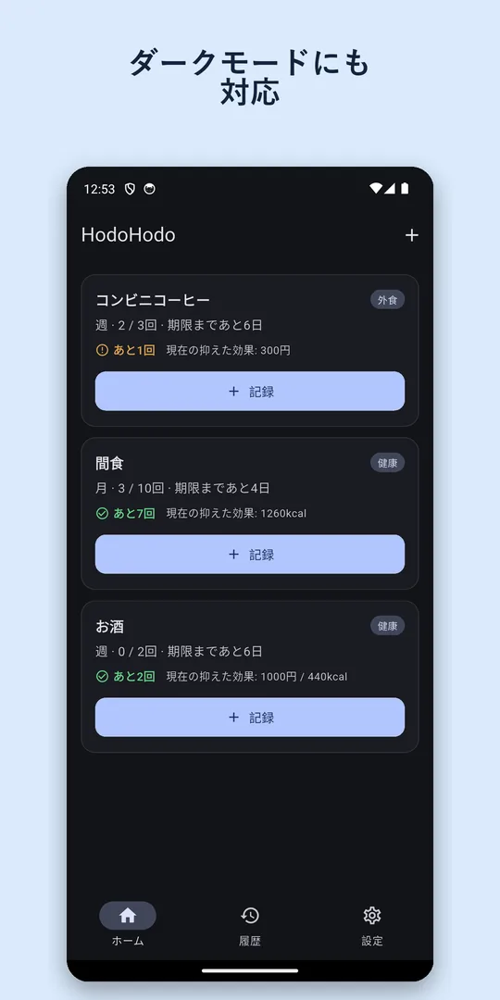
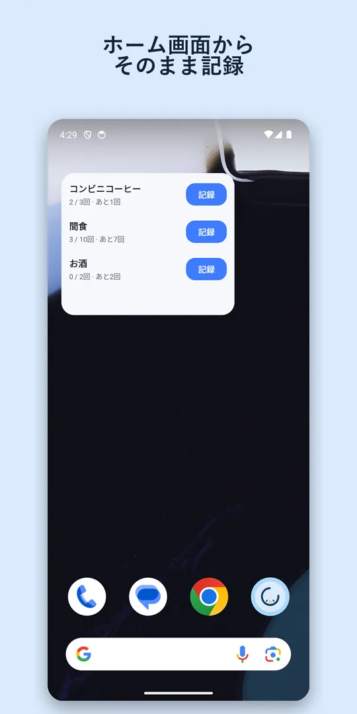

「やめる」より、
「ほどほど」に。
コーヒー、お酒、間食、ゲーム、買い物。やめたくはないけれど減らしたい習慣に「週3回まで」のような上限を決めて、1タップで記録するカウンターアプリです。
Google Play で無料ダウンロードAndroid 用 ・ 無料（項目3件まで） ・ ログイン不要

上限を決めて、1タップで記録
「1日3回」「週5回」「月10回」。期間と回数を決めたら、あとはボタンを押すだけ。「あと何回」がひと目で分かります。
我慢した分が「得」に見える
上限より少なく済んだ回数を、円・kcal・分などに換算。「今週コーヒー代600円節約」のように、成果を前向きに振り返れます。
ホーム画面から、そのまま記録
ウィジェットを置けば、アプリを開かずに記録できます。期間が終われば自動で0回からリセット。
画面




HodoHodo が向いている人
- コンビニコーヒーやカフェ代を節約したい
- 禁酒ではなく、節酒・減酒で飲む回数を調整したい
- 間食を「ゼロ」ではなく「週3回まで」にしたい
- 連続記録（ストリーク）が途切れると続かなくなる
- アカウント登録なしで、手軽に回数を記録したい
よくある質問
無料で使えますか？
無料版で項目を3件まで登録できます。4件以上は項目数無制限プラン（月額120円／買い切り600円）で使えます。機能の違いは項目数だけです。無料版にはバナー広告が表示されます。
記録はどこに保存されますか？
記録データは端末の中にだけ保存され、外部のサーバーには送られません。バックアップをファイルに書き出して、機種変更に使うこともできます。
iPhone 版はありますか？
iPhone / iPad 版は App Store での配信を準備中です。公開されたらこのページでお知らせします。